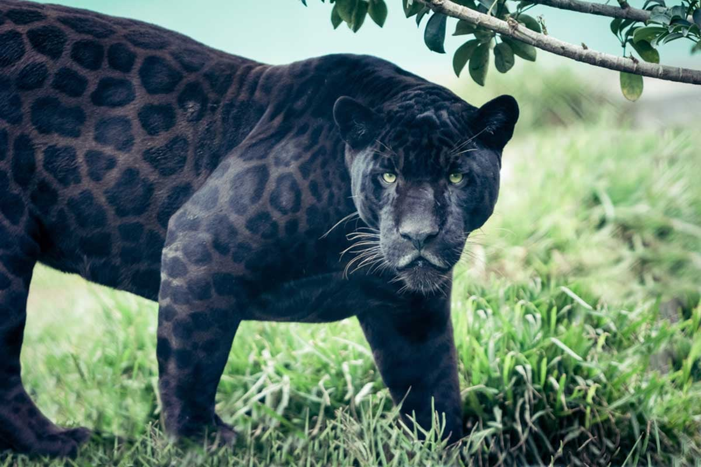
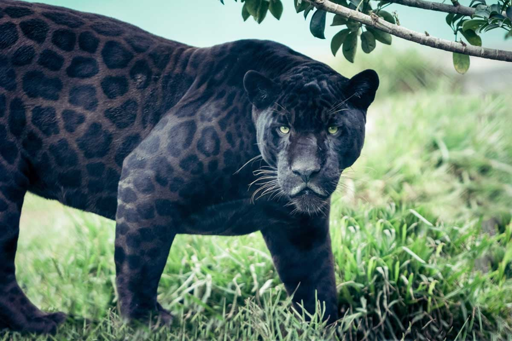

Información General del Jaguar
El jaguar es el único felino grande de América y el tercero más grande del mundo, después de los tigres y los leones. Son muy parecidos a los leopardos,
que viven en África y Asia, pero las manchas de los jaguares son más complejas y suelen tener un punto en el centro.
Antiguamente, en muchas culturas sudamericanas, estos imponentes felinos eran adorados como dioses, y existen representaciones del jaguar en el arte y
la arqueología de las culturas precolombinas.
Tanque Tropical
El jaguar es robusto y musculoso, conocido por su cuerpo compacto y su cabeza grande. Su pelaje es generalmente de un color amarillo dorado, aunque
también existen jaguares completamente negros (conocidos como panteras negras). El pelaje típico está adornado con rosetas negras que pueden variar
en forma y tamaño. Estas manchas ayudan al jaguar a camuflarse en su entorno selvático.
 
